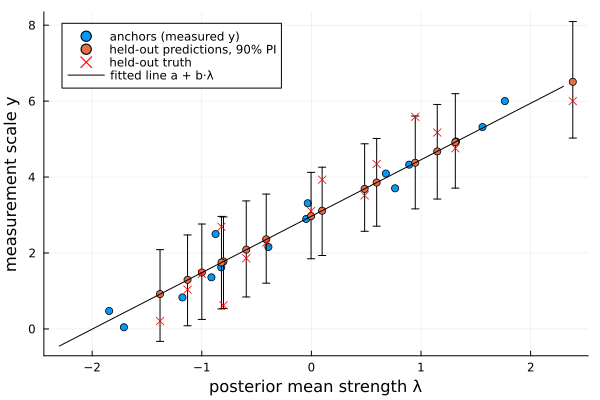

Anchored Thurstone Case V models
Like the anchored Bradley–Terry model, the anchored Thurstone Case V model (ThurstoneCaseVAnchored) ties the latent comparison scale to real measurements. For an anchored subset $S$ it assumes
\[y_i = a + b\,\lambda_i + \varepsilon_i, \qquad \varepsilon_i \sim N(0, \sigma^2), \quad i \in S,\]
where the $\lambda$ are the probit (Thurstone) comparison strengths. It can be fitted two ways:
- Maximum likelihood (
MLE) — two-stage: the probit comparison MLE fixes the latent scale, then the anchors calibrate $(a, b, \sigma^2)$ by weighted least squares. - Bayesian (
Bayesian) — a joint Gibbs sampler in which the comparisons (Albert–Chib augmented) inform all the $\lambda$ while the anchors pin down the calibration.
Simulating comparison data
We reuse the 30-item setup from the Thurstone page: known, evenly spaced strengths and 600 comparisons between random pairs, drawn from the discriminal-process story.
using ComparativeJudgement
using Random
using Plots
rng = MersenneTwister(42)
labels = ["S" * lpad(i, 2, '0') for i in 1:30]
n = length(labels)
λ_true = collect(range(-1.5, 1.5, length=n))
n_comparisons = 600
wins = zeros(Int, n, n)
for _ in 1:n_comparisons
i = rand(rng, 1:n)
j = rand(rng, 1:n-1)
j = j >= i ? j + 1 : j
if (λ_true[i] - λ_true[j]) + randn(rng) > 0
wins[i, j] += 1
else
wins[j, i] += 1
end
end
data = PairwiseData(wins, labels)We measure half the items (every other one) and hold the rest out to test prediction. The true calibration is $a = 3$, $b = 2$, $\sigma = 0.1$:
anchored_set = 1:2:n # S01, S03, …, S29
held_out = 2:2:n # S02, S04, …, S30
y_true = 3.0 .+ 2.0 .* λ_true # noiseless measurement scale
y_obs = y_true[anchored_set] .+ 0.1 .* randn(rng, length(anchored_set))
adata = AnchoredData(data, labels[anchored_set], y_obs)Maximum-likelihood calibration
The MLE fit estimates the strengths from the comparisons, then regresses the anchor measurements on them. calibration returns $(a, b, \sigma^2)$:
fitted_mle = fit(ThurstoneCaseVAnchored(), MLE(), adata)
calibration(fitted_mle)(a = 2.9965121744499466, b = 1.5737704175216762, σ² = 0.25809162140942826)predict maps every item onto the measurement scale; with prob it returns a plug-in normal prediction interval. Comparing the never-measured held-out items against their true values:
preds_mle = predict(fitted_mle)
rmse = sqrt(sum((preds_mle[held_out] .- y_true[held_out]).^2) / length(held_out))
round(rmse, digits=3)0.622Bayesian inference
The joint Bayesian fit propagates the comparison uncertainty into the calibration and the predictions. The priors are bundled in an AnchoredPrior with weakly informative defaults:
method = Bayesian(n_samples=2000, n_burnin=500)
fitted_bayes = fit(ThurstoneCaseVAnchored(), method, adata; rng=rng)
calibration(fitted_bayes)(a = 2.9694905449404643, b = 1.4871750202977032, σ² = 0.33072209916094897)As in the Bradley–Terry case the intercept is recovered almost exactly while the slope is attenuated — the errors-in-variables effect of regressing on $\lambda$'s that are themselves located only to within a few tenths by ~40 comparisons each.
The whole joint model fits on one picture: the calibration line maps latent strengths to the measurement scale, the anchors pin it down, and the held-out items ride along it with predictive intervals that cover their true values:
cal = calibration(fitted_bayes)
λ_post = posterior_mean(fitted_bayes)
preds = predict(fitted_bayes)
pred_ints = [predict(fitted_bayes, k; prob=0.9, rng=rng) for k in held_out]
plo, phi = first.(pred_ints), last.(pred_ints)
scatter(λ_post[anchored_set], y_obs;
xlabel="posterior mean strength λ", ylabel="measurement scale y",
label="anchors (measured y)", legend=:topleft)
scatter!(λ_post[held_out], preds[held_out];
yerror=(preds[held_out] .- plo, phi .- preds[held_out]),
label="held-out predictions, 90% PI")
scatter!(λ_post[held_out], y_true[held_out]; marker=:x, color=:red,
label="held-out truth")
plot!(x -> cal.a + cal.b * x, -2.3, 2.3; color=:black, label="fitted line a + b·λ")
Count how many of the fifteen held-out true values fall inside their 90% predictive interval:
covered = count(held_out) do k
lo, hi = predict(fitted_bayes, k; prob=0.9, rng=rng)
lo <= y_true[k] <= hi
end
(covered, length(held_out))(14, 15)The latent-scale accessors work exactly as in the plain fit:
(posterior_mean(fitted_bayes)[end], probability(fitted_bayes, "S30", "S01"))(2.3845401242395705, 0.9998870513543977)Group-averaged anchors
When a measurement is known only for a group of items (e.g. a batch average), each anchor targets a group $G_g$ and is modelled as the group mean, with variance $\sigma^2/n_g$ so larger groups count as more precise. We split the 30 items into 10 batches of 3 and measure each batch's mean:
batches = [collect(g) for g in Iterators.partition(1:n, 3)]
batch_labels = [labels[g] for g in batches]
batch_y = [3.0 + 2.0 * sum(λ_true[g]) / length(g) for g in batches] .+
0.1 .* randn(rng, length(batches))
gdata = AnchoredData(data, batch_labels, batch_y)
fitted_groups = fit(ThurstoneCaseVAnchored(), method, gdata; rng=rng)
calibration(fitted_groups)(a = 2.9769321178741084, b = 1.6854353015536718, σ² = 0.4549660303559308)The calibration is recovered from the group averages alone, and every item still gets its own per-item prediction:
round.(predict(fitted_groups)[1:6], digits=2)6-element Vector{Float64}:
0.39
0.72
-0.36
1.43
1.07
0.88The anchor likelihood only constrains $a + b\lambda$, so the sampler keeps center=true (sum-to-zero $\lambda$) and the intercept absorbs the location — exactly as in the anchored Bradley–Terry model.